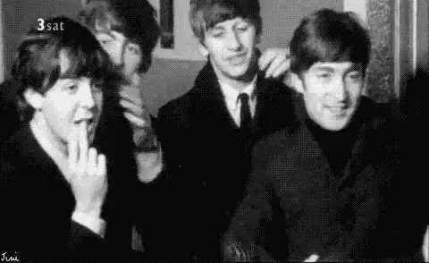
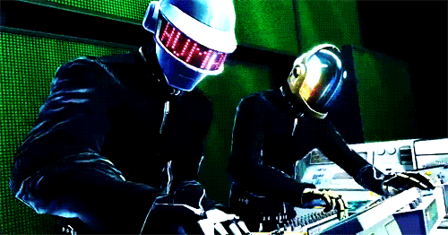

Los Beatles:
Antes de alcanzar la fama, la banda inglesa consiguió un contrato con la productora Decca Recording,
que grabó 15 de sus canciones. Sin embargo, los productores no quedaron complacidos con el grupo y les dijeron: ‘No nos gusta cómo suenan, no tienen futuro en la música’.

Daft Punk:
El dúo francés de música electrónica Daft Punk, identificables por sus cascos de robot, anunció el 22 de febrero .
su separación después de casi tres décadas de existencia y un buen puñado de éxitos que pusieron a bailar al mundo. En Francia de donde son originarios se apaga un mito musical y de comunicación.
toda la biografia esta dando click a la imagen.
